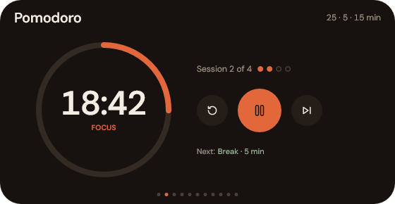
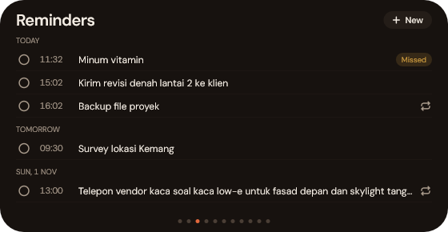
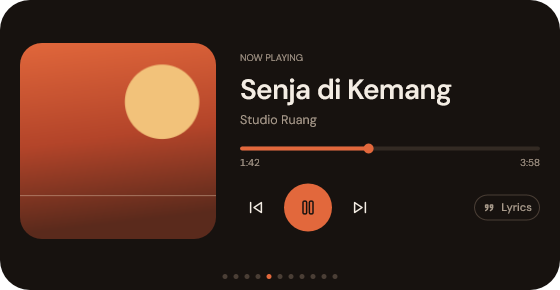
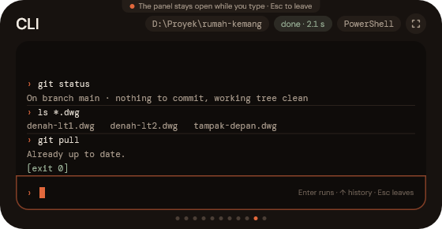
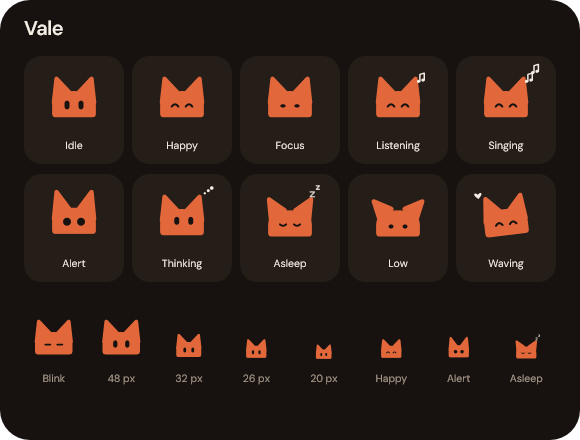

Hover the notch to open the panel, scroll to change pages. When nothing is happening, it is just a clock.
Calendar
Your Google Calendar by day, week or month. Add and edit events without opening a browser.

Pomodoro
A focus timer with a ring in the notch, so you always know how long is left.

Reminders
Once, daily or weekly. Missed ones show up when you are back.

Music
Cover, controls and optional synced lyrics for whatever is playing.

CLI
Run a quick command in PowerShell or cmd, right inside the panel.

The cat
A small cat in the notch whose face and ears tell you what is going on.